数字信号处理复习总结Part3
07 调制、解调和滤波
一、通信系统
- 基本概念
通信：把发送者拥有的消息传递给接收者
为达到通信的目的
- 要把信源消息经发送设备转变为适合信道传输的信号，因此需要进行调制、编码、放大等操作。
- 发送和接收设备还可能包括多路复用、加密、纠错等处理设备
- 传输媒介也称为信道，可为导线、电缆、光纤等。混入信道的噪声无法避免，在构建通信系统时需要考虑 噪声的影响。
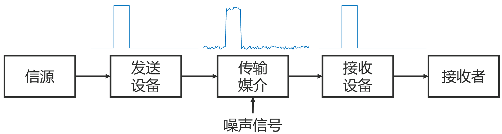
- 通信系统的分类
- 按照传输介质分类：
- 有线信道（电缆、光缆等）
- 无线信道（长波、中波、短波、微波、光通信）
- 按照频率范围分类，不同波段使用的传输媒质不同：
- 如短波使用同轴电缆
- 高于 30 MHz 的电波称为微波
- 长、中、短波所占频带总和约30MHz，而微波频带约300GHz
- 频率范围为 20Hz-20kHz的音频信号，在大气层传输时会剧烈衰减，但高频率信号可在大气层中传播到较远距离
- 若音频信号频率为10kHz，直接传输需要7.5km长的天线，在大气层中传输音频，需要将低频信号“加 载”或“嵌入”到一个高频信号上，再通过天线向空间辐射。
- 天线长度与辐射电波波长数量级一致(1/4波长以上)时，才能有较好的辐射特性，将信号传递到远方。
- 不同通信波段使用不同尺寸的通信天线，天线尺寸和波长成正比关系

- 信道传输
- 调制：将低频信号“加载”或“嵌入”到一个高频振荡信号上
- 解调：从含有低频信号的高频振荡信号中提取低频信号
二、信号调制
待发送的信号 x(t) 为调制信号，用于完成载送信号任务的高频振荡信号 c(t) 为载波信号，调制后的高频信号称为已调波。（x(t) 不一定是低频信号）
载波 c(t) 的某个参数（幅度、频率或相位）随 x(t) 做有规律变化：
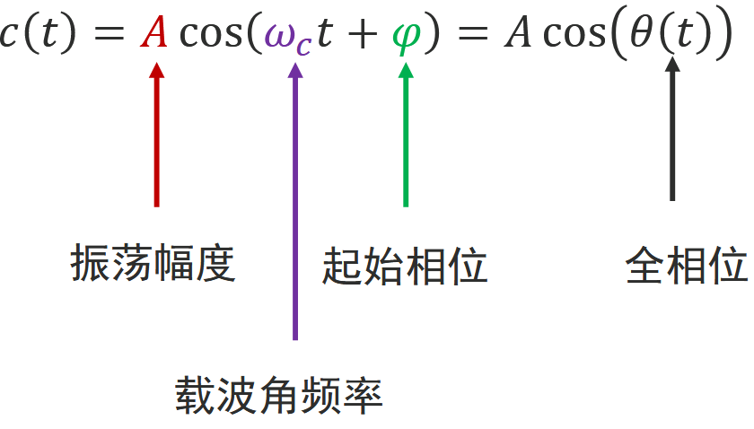
调制过程中，A, ωc, φ, θ(t) 都可以随 x(t)变化
幅度调制：A 随 x(t) 线性改变，而 ωc, φ 不变
角度调制：θ(t) 随 x(t) 线性改变，而 A 不变，分为频率调制（FM）和相位调制（PM）
- 正弦载波调幅
- 信号调幅，设置载波信号 c(t) = cos (ωct)
- 为使幅度 A 随调制信号 x(t) 线性变化（将 x(t) 嵌入 c(t)），将二者相乘：y(t) = x(t) ⋅ c(t) = x(t) ⋅ cos (ωct) 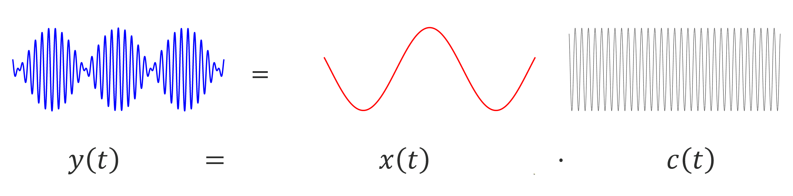
- 根据调制定理，$Y(j\omega)=\frac{1}{2\pi}[X(j\omega)*\pi[\delta(\omega+\omega_c)+\delta(\omega-\omega_c)]]=\frac{1}{2}[X(j(\omega+\omega_c))+X(j(\omega-\omega_c))]$
- 若 ωc > ωm，则两部分频谱不会重叠
- 调制前后总能量不变
- 复指数载波调制
- 设 c(t) = ej(ωct + φ), φ = 0 进行调幅，可得 $X(j\omega)=\frac{1}{2\pi}[X(j\omega)*2\pi[\delta(\omega-\omega_c)]]=X(j(\omega-\omega_c))$
- 不要求 ωc > ωm
- 可通过滤波法（高通、低通滤波器）分别得到上下边带
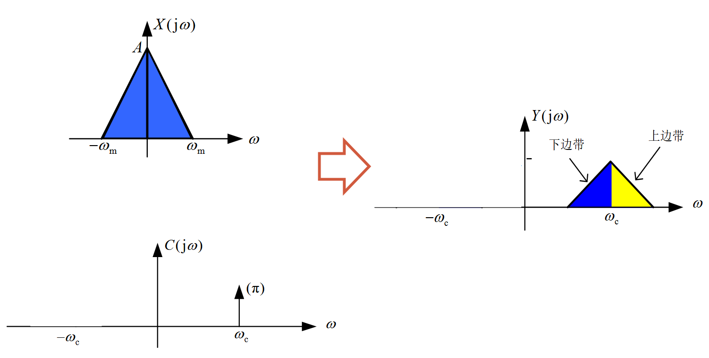
- 单边带调幅
只发送上边带或者下边带信号，节省能量和带宽
采用带通滤波器实现单边带幅度调制
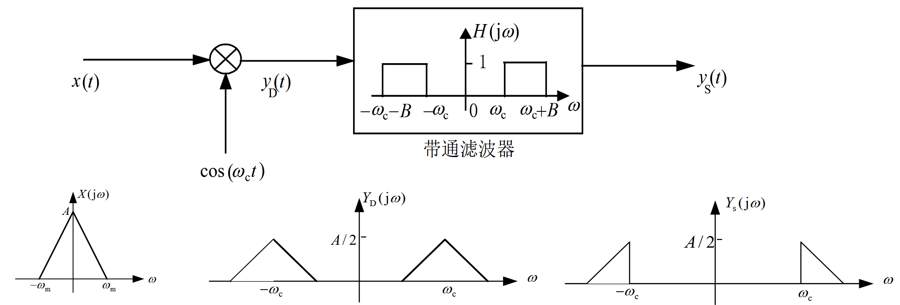
三、信号解调
- 同步解调
从 y(t) 中恢复出 x(t)，即从 Y(jω) 中恢复出 X(jω)
y(t) = x(t) ⋅ c(t) = x(t) ⋅ cos (ωct)，为移回 X(jω)，用 cos (ωct) 再次乘以 x(t)：
$r(t)=y(t)\cos\omega_c t=x(t)\cdot\cos^2(\omega_c t)=\frac{1}{2}x(t)+\frac{1}{2}x(t)\cos(2\omega_c t)$
$R(j\omega)=\frac{1}{2}X(j\omega)+\frac{1}{4}[X(j(\omega+2\omega_c))+X(j(\omega-2\omega_c))]$
解调后，原始信号信息保存完好，仅有1/2系数差别
滤波器带宽需要满足 ωm < B < 2ωc − ωm
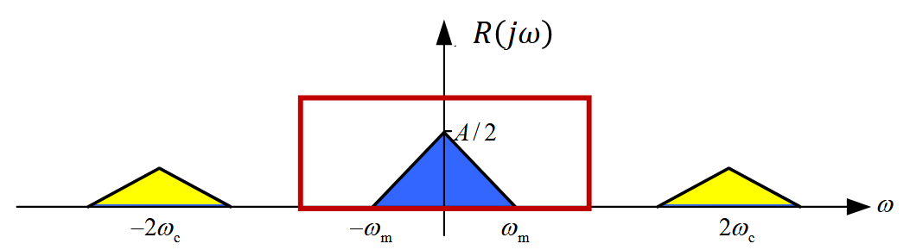
- 收发端相位不等遇到的问题
- 若调制与解调端载波相位不等，则解调后的信号将会失真
- $r(t)=x(t)\cos(\omega_c t+\varphi)\cos(\omega_c t+\theta)=\frac{1}{2}x(t)\cos(\varphi-\theta)+\frac{1}{2}x(t)\cos(2\omega_c t+\varphi+\theta)$
- 因此 $r(t)=\begin{cases}x(t),&\varphi=\theta\\0,&\varphi-\theta=\frac{\pi}{2}\end{cases}$，相位差为$\frac{\pi}{2}$ 时，无法恢复信号
四、信道复用
- 频分复用（Frequency-division multiplexing，FDM）
不同信号占用不同的频带
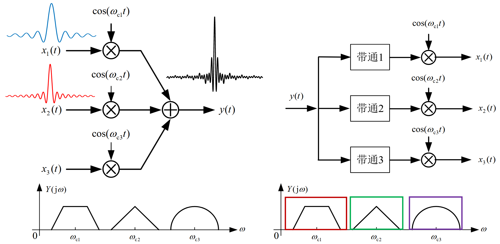
- 时分复用（Time-Division Multiplexing,TDM）
时分复用的基础是抽样定理
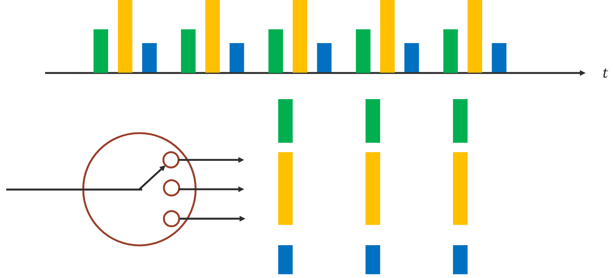
08 离散信号的傅里叶变换
一、离散信号（序列）的傅里叶变换
- DTFT/IDTFT
- 离散时间傅里叶变换（DTFT）: $\mathrm{DTFT}[x[n]]=X(e^{j\omega})=\sum\limits_{n=-\infty}^{\infty}x[n]e^{-jn\omega}$
- 逆变换（IDTFT）：$\mathrm{IDTFT}[X(e^{j\omega})]=x[n]=\frac{1}{2\pi}\int_{-\pi}^{\pi}X(e^{j\omega})e^{j\omega n}d\omega$
- X(ejω) 是复数，是以 2π 为周期的周期函数
- 收敛充分条件：能量受限或绝对可和
DTFT的性质
性质 数学表达式 时移 DTFT{x[n − k0]} = e−jωk0X(ejω) 频移 DTFT{ejω0nx[n]} = X(ej(ω − ω0)) 能量定理 $\sum\limits_n|x[n]|^2=\frac{1}{2\pi}\int_{-\pi}^{\pi}|X(e^{j\omega})|^2d\omega$ 时域卷积 DTFT{x[n] * h[n]} = X(ejω)H(ejω) 频域卷积 $\mathrm{DTFT}\left\{x[n]h[n]\right\}=\frac{1}{2\pi}\int_{-\pi}^{\pi}X(e^{j\theta})H(e^{j(\omega-\theta)})d\theta$ 频域微分 $\mathrm{DTFT}\left\{nx[n]\right\}=j\frac{dX(e^{j\omega})}{d\omega}$
二、离散信号的频域分析
- DFS/IDFS
- 离散傅里叶级数（DFS）：$\tilde{X}[k]=\mathrm{DFS}[\tilde{x}[n]]=\sum\limits_{n=0}^{N-1}\tilde{x}[n]W_N^{kn},W_N=e^{-j\frac{2\pi}{N}}$
- 逆变换（IDFS）：$\tilde{x}[n]=\mathrm{IDFS}(\tilde{X}[k])=\frac{1}{N}\sum\limits_{k=0}^{N-1}\tilde{X}[k]W_N^{-kn}$
- 整体记为：$\tilde{x}[n]\overset{DFS}{\longleftrightarrow}\tilde{X}[k]$
- 常用离散周期序列的频谱
- 周期单位脉冲序列 δN[n]：$\tilde{X}[k]=\mathrm{DFS}\left\{\tilde{x}[n]\right\}=\sum\limits_{n=0}^{N-1}\delta_N[n]W_N^{nk}=1$
- 正弦序列，如周期序列 x̃[n] = cos (πn/6) 的频谱，N = 12 ：
$\tilde{x}[n]=\frac{1}{2}e^{j\frac{2\pi}{12}n}+\frac{1}{2}e^{-j\frac{2\pi}{12}n}=\frac{1}{2}W_{12}^{-n}+\frac{1}{2}W_{12}^{n}$
$\tilde{X}[k]=\sum\limits_{n=0}^{11}(\frac{1}{2}W_{12}^{-n}+\frac{1}{2}W_{12}^{n})W_{12}^{nk}=\begin{cases}6,&k=1,11\\0,&2\le k\le 10,k=0\end{cases}$
- DFS的性质
线性特性：DFS{ax̃1[n] + bx̃2[n]} = aDFS{x̃1[n]} + bDFS{x̃2[n]}
位移特性：
- 时域位移：DFS{x̃[n + m]} = WN−kmX̃[k]
- 频域位移：DFS{WNlnx̃[n]} = X[l + k]
对称性：DFS{x̃*[n]} = X̃*[−k], DFS{x̃*[−n]} = X̃*[k]
- x̃[n] 为实序列，X̃[k] = X̃*[−k]
- x̃[n] 为偶对称实序列，X̃[k] 为偶对称实序列
- x̃[n] 为奇对称实序列，X̃[k] 为奇对称虚序列（实部为0）
- 偶对称：x̃[n] = x̃[−n] = x̃[N − n]
- 奇对称：x̃[n] = −x̃[−n] = −x̃[N − n]
周期卷积定理：
$\mathrm{DFS}\left\{\tilde{x}_1[n]\textcolor{red}{\tilde{*}}\tilde{x}_2[n]\right\}=\mathrm{DFS}\left\{\tilde{x}_1[n]\right\}\mathrm{DFS}\left\{\tilde{x}_2[n]\right\},\mathrm{DFS}\left\{\tilde{x}_1[n]\cdot\tilde{x}_2[n]\right\}=\frac{1}{N}\mathrm{DFS}\left\{\tilde{x}_1[n]\right\}\textcolor{red}{\tilde{*}}\mathrm{DFS}\left\{\tilde{x}_2[n]\right\}$
周期卷积的结果一般和线性卷积不同
通过对序列补零可使周期卷积的结果和线性卷积的结果相同
三、离散傅里叶变换
四类信号的傅里叶变换
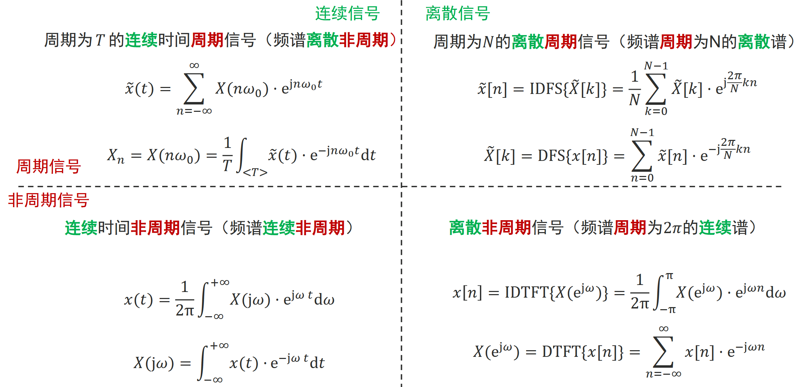
基于主值序列定义长度为 N (非周期)序列的离散傅里叶变换(DFT)：
- DFT: $X[k]=\sum\limits_{n=0}^{N-1}x[n]\cdot e^{-j\frac{2\pi}{N}nk}=\sum\limits_{n=0}^{N-1}x[n]W_N^{nk},k=0,1,\cdots,N-1$
- IDFT：$x[n]=\frac{1}{N}\sum\limits_{k=0}^{N-1}X[k]\cdot e^{j\frac{2\pi}{N}nk}=\frac{1}{N}\sum\limits_{k=0}^{N-1}X[k]W_N^{-nk},n=0,1,\cdots,N-1$
- 表示为：X[k] = DFT{x[n]}, x[n] = IDFT{X[k]}
- 离散傅里叶变换示例
x[n] = δ[n]，0 ≤ n ≤ N − 1，求 N 点序列 x[n] 的DFT
$X[k]=\sum\limits_{n=0}^{N-1}x[n]W_N^{nk}=\sum\limits_{n=0}^{N-1}\delta[n]W_N^{nk}=1,0\le k\le N-1$
$x[n]=\cos(\frac{2\pi}{N}n)$，0 ≤ n ≤ N − 1，求 N 点序列 x[n] 的DFT
$x[n]=\cos(\frac{2\pi}{N}n)=\frac{1}{2}(e^{j\frac{2\pi}{N}n}+e^{-j\frac{2\pi}{N}n})=\frac{1}{2}W_N^n+\frac{1}{2}W_N^{-n}$
$X[k]=\sum\limits_{n=0}^{N-1}x[n]W_N^{nk}=\sum\limits_{n=0}^{N-1}(\frac{1}{2}W_N^n+\frac{1}{2}W_N^{-n})W_N^{nk}=\begin{cases}N/2,&k=1,N-1\\0,&其他\end{cases}$
- DFT、DFS、DTFT的关系
DFT 可以看成是截取 DFS 的主值序列构成的变换对
$x[n]=\frac{1}{N}\sum\limits_{k=0}^{N-1}X[k]\cdot e^{j\frac{2\pi}{N}nk}=\tilde{x}[n]\cdot\textcolor{red}{R_N[n]}$
$X[k]=\sum\limits_{n=0}^{N-1}X[k]\cdot e^{-j\frac{2\pi}{N}nk}=\tilde{X}[k]\cdot\textcolor{red}{R_N[k]}$
其中 $R_N[n]=\begin{cases}1,&0\le n\le N-1\\0,&o.w.\end{cases}$
x[n] 的DFT X[k] 是其 DTFT X(ejω)在一个周期 [0, 2π) 的等间隔抽样
$X(e^{j\omega})=\mathrm{DTFT}\left\{x[n]\right\}=\sum\limits_{n=-\infty}^{\infty}x[n]\cdot e^{-jn\omega}$
$X[k]=\mathrm{DFT}\left\{x[n]\right\}=\sum\limits_{n=0}^{N-1}x[n]\cdot e^{-j\frac{2\pi}{N}nk}$
$X[k]=X(e^{j\omega})\big|_{\omega=\frac{2\pi}{N}k},k=0,1,\cdots,N-1$
- DFT 的周期性
- $X[k]=\sum\limits_{n=0}^{N-1}x[n]\cdot e^{-j\frac{2\pi}{N}nk},k=0,1,\cdots,N-1$
- $x[n]=\frac{1}{N}\sum\limits_{k=0}^{N-1}X[k]\cdot e^{j\frac{2\pi}{N}nk},n=0,1,\cdots,N-1$
- X[k] 的周期为 N，x[n] 的周期也为 N：X[k + N] = X[k], x[n + N] = x[n]
- DFT 的性质
线性特性：需将较短序列补零后，再按长序列的点数做DFT
DFT{ax1[n] + bx2[n]} = aDFT{x1[n]} + bDFS{x2[n]}
时域的循环位移对应频域的相移：
DFT{x[(n + m)N]} = WN−mkX[k], DFT{x[(n − m)N]} = WNmkX[k]
时域的相移对应频域的循环位移：
DFT{WNlnx[n]} = X[(k + l)N], DFT{WN−lnx[n]} = X[(k − l)N]
序列的循环卷积：$x_1[n]\circledast x_2[n]=\sum\limits_{k=0}^{N-1}x_1[(k)_N]x_2[(n-k)_N]R_N[n]$
时域卷积定理：时域的循环卷积对应频域的乘积
DFT{x1[n] ⊛ x2[n]} = X1[k] ⋅ X2[k]
频域卷积定理：时域的乘积对应频域的循环卷积
$\mathrm{DFT}\left\{x_1[n]\cdot x_2[n]\right\}=\frac{1}{N}X_1[k]\circledast X_2[k]$
- 基于 DFT 的卷积计算
利用 DFT 计算长为 M, L 序列的卷积（输出长度为 M + L − 1）: y[n] = IDFT[X[k] ⋅ H[k]] = x[n] * h[n]
对 x[n], h[n] 补零到长度为 N,做 N 点DFT
在频域做乘积得到 Y[k]
对 Y[k] 做 IDFT
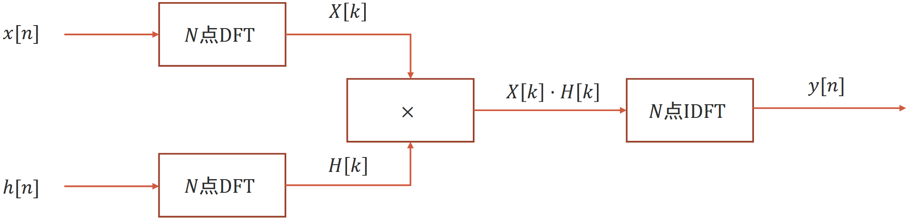
四、快速傅里叶变换
- 离散傅里叶变换的复杂度
- DFT 和 IDFT 有相同的时间复杂度，且只包含加法和乘法
- N 点序列 DFT 的计算复杂度：复数加法 N(N − 1)；复数乘法 N2
- 降低 DFT 计算量的思路
- 将长序列DFT分解为短序列的DFT
- 利用旋转因子 WNnk
的周期性、对称性、可约性和特殊值：
- 周期性：WNnk = WN(n + N)k
- 对称性：(WNnk)* = WN−nk = WN(N − n)k
- 可约性：WNnk = WmNmnk = WN/mnk/m, N/m为整数
- 特殊值：$W_N^{0}=1;W_{N}^{\frac{N}{2}}=-1;W_{N}^{\frac{N}{4}}=-j;W_{N}^{k+\frac{N}{2}}=-W_N^k$
- FFT算法：将时域序列逐次分解为一组子序列，利用旋转因子的特性，由子序列的DFT来实现整个序列的DFT
基2时间抽取FFT算法：$x[n]\rightarrow\begin{cases}x[2r]\\x[2r+1]\end{cases}\space\space r=0,1,\cdots,\frac{N}{2}-1$
基2频率抽取FFT算法：$X[k]\rightarrow\begin{cases}X[2m]\\X[2m+1]\end{cases}\space\space m=0,1,\cdots,\frac{N}{2}-1$
基2时间抽取FFT算法推导：
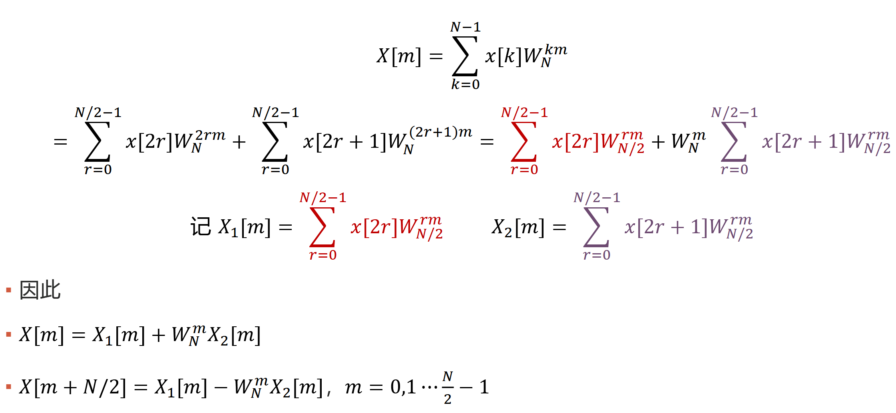
算法的计算复杂度：复数乘法次数 $\frac{N}{2}\log_2N$
2点基2时间抽取FFT算法流图：
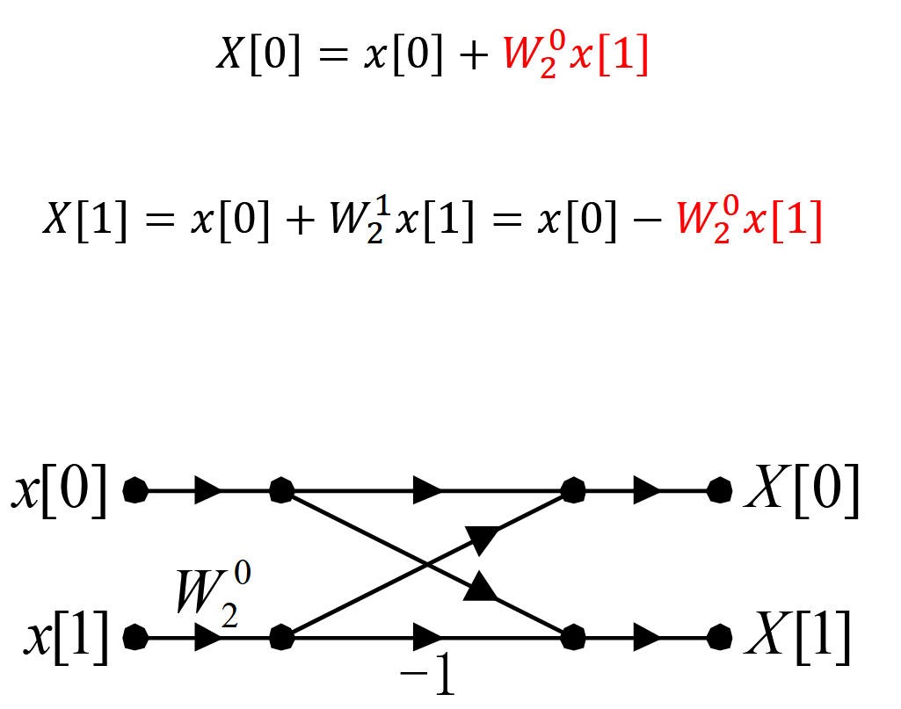
4点基2时间抽取FFT算法流图：
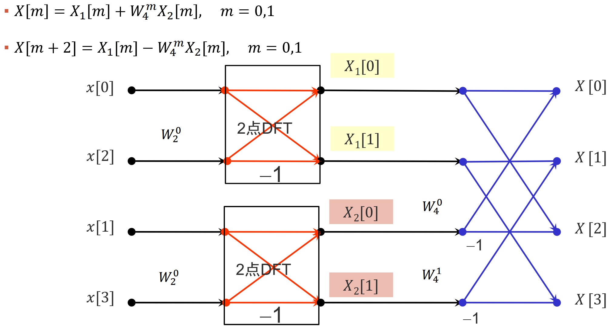
8点基2时间抽取FFT算法流图：
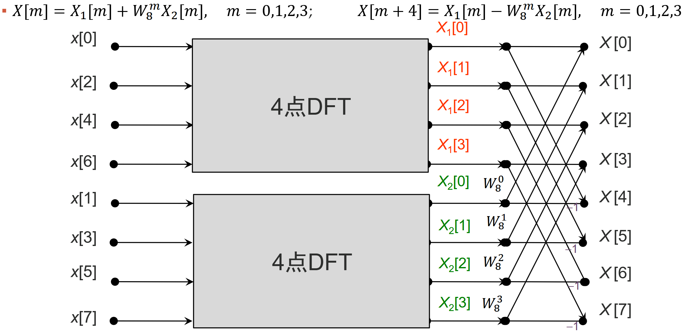
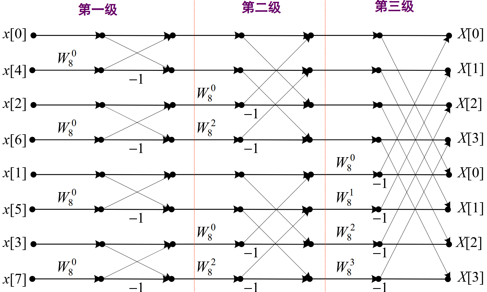
利用FFT实现IFFT：
- 将 X[m]取共轭
- 用FFT流图计算 DFT{X*[m]}
- 对步骤(2)中结果取共轭并除以 N: $x[n]=\frac{1}{N}(\sum\limits_{k=0}^{N-1}X^{*}[m]W_N^{nk})^{*}$